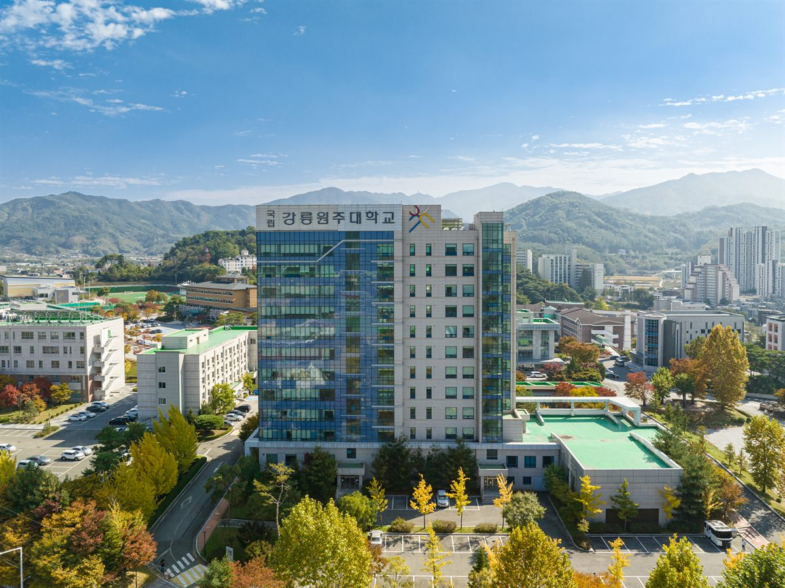

강원대학교는 춘천에 본부를 둔 거점국립대입니다. 그런데 올해 원서를 쓰는 학생들이 마주한 강원대는 작년까지의 강원대와 규모가 다릅니다. 2026년 3월 1일, 강원대가 춘천·강릉·삼척·원주 4개 캠퍼스 체제의 이른바 '강원 1도 1국립대'로 새로 출범했기 때문입니다. 2027학년도 수시는 그 통합 이후 처음 치러지는 입시입니다.
2027학년도 강원대는 신입생 6,516명을 뽑고, 이 가운데 5,611명(86.1%)을 수시로 선발합니다. 앞서 정리해 드린 충남대(80.5%)보다도 수시 비중이 높습니다. 열 자리 중 거의 아홉 자리가 수시라는 뜻입니다. 원서접수는 9월 7일부터 11일까지이고, 강원대는 9월 11일(금) 오후 8시에 온라인 접수를 마감합니다.
① 캠퍼스가 네 곳이라는 사실부터 확인하셔야 합니다
다른 대학 글에서는 보통 전형 이름부터 짚습니다. 그런데 올해 강원대는 캠퍼스 확인이 먼저입니다. 같은 '강원대학교'라는 이름 아래 춘천·강릉·삼척·원주 네 곳이 있고, 캠퍼스마다 전형 운영이 같지 않기 때문입니다.
학부모님들이 가장 혼동하시는 지점이 여기입니다. 인터넷에서 "강원대 수시 커트라인"을 검색해 나온 숫자가 어느 캠퍼스 이야기인지 확인하지 않으면, 전혀 다른 모집단위의 자료를 보고 판단하게 됩니다. 특히 강릉·원주 캠퍼스는 지난해까지 국립강릉원주대학교라는 별도의 대학이었기 때문에, 예전 입시 결과를 그대로 '강원대 입결'로 읽으면 안 됩니다.
정리하면 이렇습니다. 모집요강을 펼치실 때 학과 이름 옆에 붙은 캠퍼스 표기를 먼저 보시고, 그 캠퍼스 기준으로 전형·수능최저·경쟁률을 확인하셔야 합니다.
② 수능최저 — 캠퍼스에 따라 있고, 없습니다
강원대 2027 수시에서 가장 실전적인 정보가 이 대목입니다. 수능최저학력기준이 대학 전체에 일괄 적용되지 않습니다.
- 춘천캠퍼스 — 일반교과전형, 지역교과전형, 그리고 일부 학생부종합전형에 수능최저를 적용합니다.
- 삼척캠퍼스 — 모든 전형에서 수능최저를 적용하지 않습니다.
- 강릉·원주캠퍼스 — 치의예과를 제외한 전체 전형에서 수능최저를 적용하지 않습니다.
이 차이가 지원 전략을 가릅니다. 내신은 받쳐 주는데 모의고사 등급이 불안한 학생이라면, 수능최저가 없는 캠퍼스·모집단위가 현실적인 카드가 됩니다. 수시 6장을 짤 때 "최저 있는 곳과 없는 곳을 섞으라"는 조언을 들어 보셨을 텐데, 강원대는 한 대학 안에서도 그 섞기가 가능한 구조인 셈입니다.
반대로 수능 성적이 강점인 학생이라면 춘천캠퍼스의 최저 적용 전형이 내신 열세를 덮어 주는 자리가 됩니다. 최저를 못 맞추는 지원자가 빠져나가면서 실질 경쟁률이 내려가기 때문입니다.
③ 학생부교과 — 일반교과Ⅰ·지역교과Ⅰ가 축입니다
강원대 수시는 학생부교과, 학생부종합, 실기·실적 세 갈래로 짜여 있습니다. 이 가운데 교과 쪽 이름은 이렇습니다.
- 일반교과Ⅰ전형 — 교과 성적 중심의 대표 전형
- 지역교과Ⅰ전형 — 강원지역 고교 출신 학생 대상
- 저소득-지역교과Ⅰ전형 — 지역 요건에 소득 요건이 더해진 전형
국립대 수시의 중심축이 3년치 내신에 있다는 점은 강원대도 다르지 않습니다. 고1·고2 학부모님께 매번 같은 말씀을 드리게 되는데, 국립대를 염두에 두신다면 고1 1학기부터가 이미 입시입니다. 고3에 몰아서 만회할 수 있는 구조가 아닙니다.
④ 강원지역 학생 몫 1,077명 — 2027학년도는 '고교 3년' 기준
강원대는 4개 캠퍼스를 합쳐 지역교과전형 등으로 강원지역 학생 1,077명을 선발합니다. 강원도에 사시는 가정이라면 이 숫자를 먼저 보셔야 합니다. 같은 성적이라도 경쟁하는 모집단이 전국이 아니라 도 안으로 좁혀지기 때문입니다.
지원 자격에서 꼭 구분하실 것이 있습니다. 뉴스에서 "지역인재 요건이 중학교까지 강화된다"는 이야기를 들으셨을 텐데, 그 강화는 2028학년도부터입니다. 2027학년도는 '고등학교 전 과정(3년) 이수' 요건입니다. 지금 고3이라면 강원도 소재 고등학교를 3년 다녔는지가 기준이 됩니다.
지금 고2 이하라면 계산이 달라집니다. 2028학년도부터는 중학교 과정까지 해당 지역에서 마쳤는지를 함께 보게 되므로, 이사나 전학을 고민 중이시라면 학년이 아니라 학교 소재지 기준으로 미리 따져 보셔야 합니다. 한 해 차이로 자격이 갈리는 항목입니다.
⑤ 춘천 의예과 지역의사선발전형 39명 — 자리가 권역별로 나뉩니다
2027학년도에 새로 생긴 전형입니다. 춘천캠퍼스 의예과에 학생부교과 100%를 반영하는 지역의사선발전형이 신설돼 39명을 뽑습니다. 특이한 점은 인원을 미리 쪼개 놓았다는 것입니다.
- 진료권 선발 — 27명
- 광역권 선발 — 12명
수능최저는 국어·수학·영어·과학탐구 중 수학과 과학탐구 1과목을 필수로 포함해 3개 영역 등급 합 7 이내입니다. 의약계열치고 문턱이 낮아 보일 수 있지만, 교과 100% 전형이라 내신이 최상위권이어야 출발선에 섭니다. 최저는 통과 조건일 뿐 당락은 내신에서 갈린다고 보시는 편이 맞습니다.
다만 지역의사 전형은 졸업 후 의무 근무 조건이 따라붙는 전형입니다. 근무 기간과 조건, 위반 시 불이익은 학교와 정부 지침에 따라 정해지므로, 지원 전 모집요강 원문의 해당 조항을 반드시 직접 읽어 보셔야 합니다. 성적만 보고 결정할 전형이 아닙니다.
⑥ 학생부종합 — 면접형과 서류형으로 갈립니다
강원대 학생부종합은 이름이 여러 개입니다. 미래인재서류전형과 미래인재면접전형이 주력이고, 지역인재면접전형·지역인재서류전형, 농업 분야의 영농창업인재전형, 학·석사통합전형, 기회균형전형이 함께 운영됩니다.
학부모님이 보실 지점은 단순합니다. 면접이 있는 전형과 없는 전형이 짝으로 있다는 것입니다.
- 생활기록부는 충실한데 말하기가 약한 학생 — 서류형이 유리합니다.
- 서류가 평범해도 자기 경험을 설명할 줄 아는 학생 — 면접형에서 뒤집을 여지가 있습니다.
면접형에 지원한다면 준비는 예상 질문 암기가 아닙니다. 자기 생활기록부에 적힌 활동을 스스로 다시 설명해 보는 것이 전부입니다. 3년 전에 한 활동을 왜 했고 무엇이 남았는지 말로 정리되지 않으면, 면접장에서 답이 나오지 않습니다.
⑦ 지원 전 체크리스트
- 캠퍼스 확인 — 지원하려는 학과가 춘천·강릉·삼척·원주 중 어디인지.
- 수능최저 유무 — 그 캠퍼스·모집단위에 최저가 붙는지, 붙는다면 기준이 무엇인지.
- 지역 요건 — 강원지역 고교 3년 이수에 해당하는지(2027학년도 기준).
- 입결 자료의 출처 — 강릉·원주 학과의 지난 입결은 통합 전 국립강릉원주대 자료일 수 있습니다.
- 서류형·면접형 선택 — 아이의 강점이 기록인지 말인지.
- 의예과 지원자 — 지역의사전형의 의무 근무 조건을 가족이 함께 읽었는지.
한 가지 덧붙이면, 강원대는 2027학년도부터 '지역 균형 발전 장학금'을 신설해 국가장학금을 신청한 신입생에게 소득 수준과 관계없이 등록금 전액을 지원한다고 밝혔습니다(외국인 유학생과 의·치·약·수의학 계열은 제외). 학비 부담을 함께 따져 지원 대학을 고르는 가정이라면 계산에 넣어 두실 만합니다.
마무리 — 오늘 마감, 그리고 그다음
강원대 원서접수는 오늘(9월 11일) 오후 8시에 끝납니다. 고3 가정이라면 지금은 새로운 분석을 시작할 시간이 아니라, 이미 정한 카드의 캠퍼스 표기와 지역 요건을 마지막으로 한 번 더 확인할 시간입니다.
고1·고2 학부모님께는 이 글이 다른 용도로 쓰이기를 바랍니다. 수시 비중 86.1%라는 숫자가 말하는 바는 하나입니다. 내신과 생활기록부가 준비의 본체라는 것입니다. 와와 학습코칭센터는 학년별로 챙길 지점을 나눠 관리합니다. 고1은 첫 내신에서 무너지지 않게 과목별 공부 방식을 잡고, 고2는 내신과 수능 준비를 같은 학기에 굴리는 연습을 하며, 고3은 남은 기간에 무엇을 버리고 무엇을 붙들지 함께 정리합니다.
※ 본 글의 모집인원·전형방법·일정은 강원대학교가 발표한 2027학년도 수시모집 계획과 이를 다룬 언론 보도를 바탕으로 정리한 것입니다. 전형별 세부 모집인원, 단계별 반영 비율과 1단계 선발 배수, 면접 일정과 방식, 합격자 발표일, 캠퍼스·모집단위별 수능최저의 구체적 등급 기준, 실기·실적 전형의 종목별 기준은 본 글에 담지 않았거나 확정 표기하지 않았습니다. 특히 수능최저 적용 여부는 캠퍼스와 모집단위에 따라 다르므로 지원하려는 학과 기준으로 직접 확인하셔야 합니다. 지역의사선발전형의 의무 근무 기간과 조건도 원문 확인이 필요합니다. 지원 전 반드시 강원대학교 입학처의 2027학년도 수시모집요강 원문에서 최종 확인하시기 바랍니다. 본 글은 학부모·학생의 이해를 돕기 위한 정리 자료입니다.